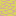
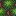
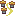

MapCellView.pde
Constants
These arbitrary numbers refer to the position of the town tile and the hospital tile in the list of tiles. It's much better to define these as constants than to sprinkle mystery numbers in our code.
int TOWN = 3;
int HOSPITAL = 4;MapCellView
MapCellView is responsible for rendering one cell of the map. There's not too much here.
class MapCellView {Instance variables
Four integers specifying the position and size of the part of the screen owned by this instance.
int x, y, cell_width, cell_height;tiles is an array of images created in MapView so they don't have to be re-loaded
in each MapCellView. This doesn't matter much for now, but if we wanted to create a scrolling world
thousands of cells in each direction, the program would slow way down if we had to keep separate
copies of each tile for each MapCellView.
PImage[] tiles;




Constructor
Nothing special happening here. We store all the values passed in.
MapCellView(int _x, int _y, int _cell_width, int _cell_height, PImage[] _tiles) {
x = _x;
y = _y;
cell_width = _cell_width;
cell_height = _cell_height;
tiles = _tiles;
}render
As with MapView, render is the most important method, and it's called
many times per second. Note that render requires a MapCellModel to
be passed in, so that we can access the state variables we need for rendering.
void render(MapCellModel model) {Set the tint according to the cell's distance. This has the effect of making cells far away from hospitals more red.
tint(get_tint(model.normalized_distance()));Place a tile image on the screen.
image(tiles[model.terrain], x, y, cell_width, cell_height);If the cell has a town, overlay the town tile image.
if (model.has_town) {
image(tiles[TOWN], x, y, cell_width, cell_height);
}If the cell has a hospital, overlay the hospital tile image.
if (model.has_hospital) {
image(tiles[HOSPITAL], x, y, cell_width, cell_height);
}
}get_tint
Gets the tint color via a linear interpolation between white and red.
color get_tint(float distance) {
return lerpColor(color(255, 255, 255), color(255, 100, 100), distance);
}
}Next up...
Hopefully, the parts of the program are starting to come together now. As you design your own Processing app, it's wise to design from the outside in. Start by designing the interface, then create one view for each part of the interface, and finally create models to keep track of state as necessary. As I designed this app, I considered creating separate models for each building, but decided it wasn't necessary. If you could do more with buildings, or if they could interact with each other more richly, it would be a more attractive design choice.
On to our last stop, MapCellModel.